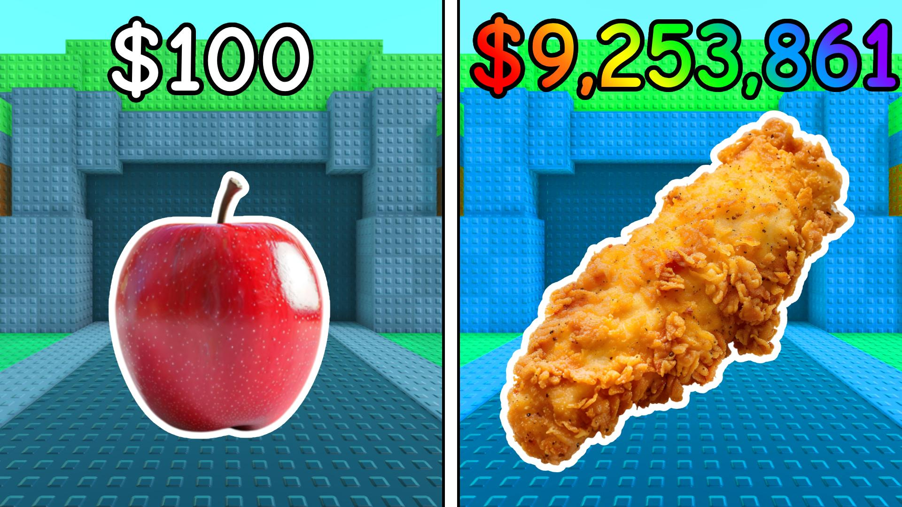
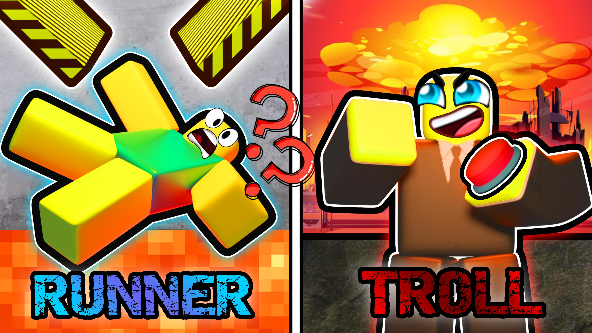
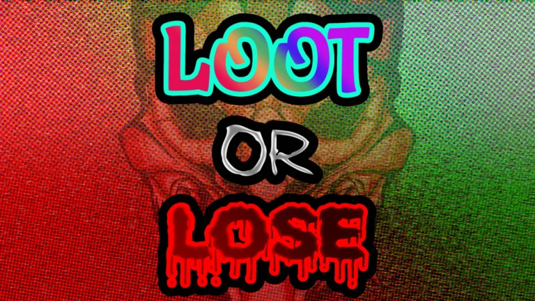
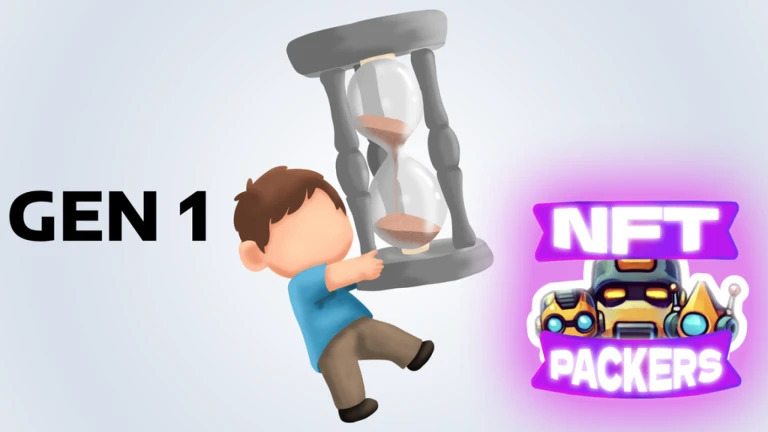
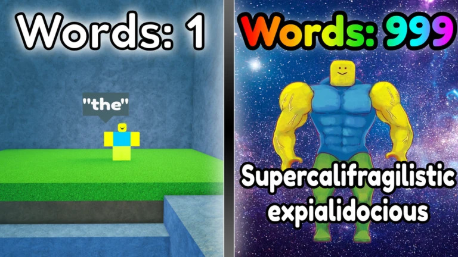
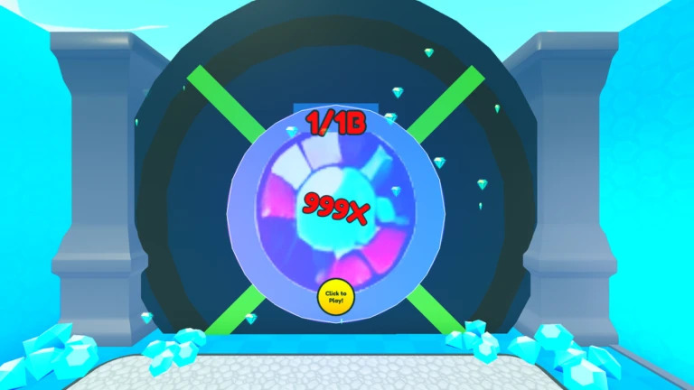

Games created and developed by Tristan Forkan
This game is about mixing ingredients in ovens to discover every recipe in your cookbook. Every server shares a global shop, where the ingredient stock changes every 5 minutes. Some items go out of stock while others restock in random amounts, making the economy addictive. You can serve food to people walking by on the road, and giving the right food to the right person gives you bonus rewards. The game saves the time left on your ovens, ingredients, and progress using datastores, and when you rejoin, it automatically finishes anything that was cooking while you were gone. It also includes monetization features like a starter pack, special ovens that cook faster, and instant-finish options for players who want to progress faster.

In this game, players pick between two sides, Runners or Trolls. Runners sprint through a series of deadly obstacles, while Trolls stand behind a glass wall and trigger traps at the perfect moment to stop them. Each kill earns Trolls money, and finishing the course rewards Runners with cash too. Players can spend their money on tools and upgrades to help them survive longer or make traps more effective. After 30 minutes, the Admin Door opens, letting one player take control of super-powerful traps that can wipe out everyone. The admin spot can be taken away through a player vote, keeping this role constantly shifting and exciting.

In this game, you press a button to roll for a random accessory, each giving boosts to things like luck, damage, defense, speed, jump height, or throw power. Once you leave the safe zone in the center, the fighting begins. If you die outside, all of your accessories drop, and a server-wide message alerts everyone that your loot is up for grabs. Getting kills earns money that can be spent on potions for faster spins or higher luck, and golden dice that make your spins luckier and more exciting. A combat log system prevents players from leaving mid-fight to keep their items. Fight other players, steal their loot, and protect your own. Players can also buy custom accessories and golden dice bundles for a major advantage.

This game is a card-opening experience built around AI-generated robots and over ten thousand possible combinations of character designs. Each card uses an image splicer to separate backgroundless robots from large sprite sheets, then applies them to one of fourteen custom-made card templates. Players wait for a countdown to earn new packs, which ticks down even while offline but twice as fast when online. Completing challenges like parkour, reaction tests, and clickers helps reduce the timer even faster. When it’s time to claim a pack, players enter an arena surrounded by twelve card packs and must pick one. Each pack has small visual differences, rewarding players who pay close attention. After choosing, they drag each card to reveal it one by one. The game includes data saving, a trading system that updates both players’ screens in real time, and an inventory that tracks every card. Players can equip visual effects that match their highest rarity or star level and display their best cards and stats on a personal billboard. There’s also an hourglass currency that stores saved time, letting players instantly reduce future timers, and a merchant that lets them trade cards to reduce everyone’s timers in the server. The shop features items like instant timers, pack bundles, and even server-wide pack drops, along with redeemable codes for limited rewards.

In this game, players press a roll button to spin a wheel filled with four colored orbs, each representing a different word rarity: gray, green, blue, and purple. Whatever orb the wheel lands on determines the rarity of the word they unlock. The chat is disabled, so the only way players can communicate is by using the words they have earned. With hundreds of words to unlock, players can combine them using a custom chat system that allows typing, backspacing, and chaining unlocked words together to form sentences. The game also has a shop where players can buy faster spin speeds and higher luck to get better words more often. It is a social game with a fun twist, where players build conversations using only the words they collect.

